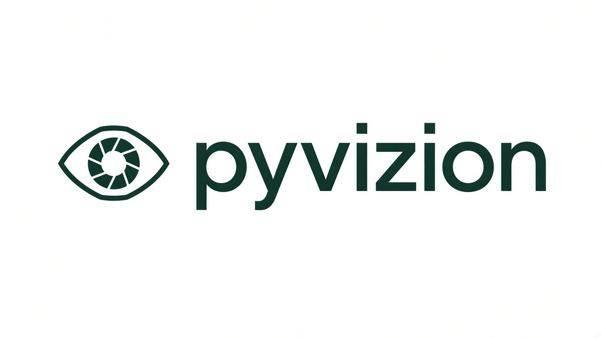

Quando usar
Quando o sistema não tem API (ERP antigo, Oracle Forms, Citrix, app desktop interno) e você precisa clicar e digitar como usuário.
Biblioteca Python · Windows
O pyvizion olha a tela como uma pessoa olharia: encontra um botão ou uma palavra, clica em cima e digita o que você mandar. Serve para automatizar sistemas que não têm API, como ERPs antigos, Oracle Forms, Delphi e Citrix.

O pyvizion é uma biblioteca Python. Ele não é um sistema separado, nem um framework pesado: você instala, importa e usa dentro do seu script para automatizar tela de sistema legado.
Quando o sistema não tem API (ERP antigo, Oracle Forms, Citrix, app desktop interno) e você precisa clicar e digitar como usuário.
Tira print da tela, acha imagem/texto, clica no alvo certo e preenche campo. Também espera elemento aparecer ou sumir.
Não é robô mágico de IA. É automação determinística por imagem e OCR: você controla cada passo do fluxo.
Aqui está uma simulação rápida (estilo vídeo curto) do que a biblioteca faz: abrir uma tela legado, ler um texto e clicar no botão certo.
vz.focus_window("ERP Legado")vz.click_text("Salvar", wait_until_found=True)vz.click_text("Código", sendtext="12345{enter}")
Simulação visual da ideia. No uso real, o pyvizion procura elementos na sua tela de verdade.
Você escreve, em Python, o que faria com o mouse e o teclado: "clique no botão Salvar", "digite 12345 no campo Código". O pyvizion executa cada passo nesta ordem:
Tira uma foto da tela em milésimos de segundo. Funciona também com dois monitores.
Você recorta o botão (ex.: salvar.png) e o pyvizion encontra esse recorte na tela, mesmo com o zoom do Windows em 125% ou 150%.
Também pode achar uma palavra escrita na tela, como "Confirmar". Quem faz a leitura é o Tesseract, um programa gratuito.
Clica bem no meio do que encontrou e, se você pedir, já digita o texto e aperta teclas como Tab e Enter.
Se um passo não der certo (a tela demorou, um menu fechou), ele repete o passo anterior e tenta outra vez.
O robô não trava se não achar algo. Quando o botão ou texto
não aparece, o comando só responde False (não achei). Assim você
decide o que fazer: if not vz.click_text("OK"): ....
O programa só para com erro se o Tesseract não estiver instalado ou se
o arquivo de imagem não existir.
Este é o fluxo real da biblioteca quando você chama click_image ou click_text.
Seu script Python
|
v
pyvizion (API Vizion / click_* / find_*)
|
+--> Captura de tela (mss)
| |
| +--> Busca por imagem (OpenCV)
| |
| +--> Busca por texto (Tesseract OCR)
|
+--> Ação (mouse / teclado)
|
+--> Resultado: True / False / região / Nonepyvizion
├─ Preparar ambiente
│ ├─ pip install pyvizion
│ └─ instalar Tesseract
├─ Definir alvos
│ ├─ imagem (png)
│ └─ texto (OCR)
├─ Executar ações
│ ├─ click_image / click_text
│ ├─ sendtext (opcional)
│ └─ waits (found / disappears)
└─ Tratar retorno
├─ True: executou
├─ False/None: não achou
└─ exception: ambiente/config quebradoLeva cerca de 10 minutos. Você precisa do Python 3.9 ou mais novo instalado no Windows. Todos os comandos abaixo são digitados no terminal (Prompt de Comando ou PowerShell).
Este comando baixa o pyvizion e tudo de que ele precisa.
pip install pyvizion
É o programa que lê textos na tela. Sem ele o pyvizion não inicia.
Baixe pelo instalador para Windows (UB-Mannheim)
e mantenha a pasta sugerida (C:\Program Files\Tesseract-OCR).
Se as telas do seu sistema forem em português, marque o idioma
Portuguese durante a instalação.
O comando doctor verifica a instalação e avisa o que estiver faltando.
python -m pyvizion doctor
Tire um print, abra no Paint (ou na Ferramenta de Captura) e recorte
só o botão. Salve numa pasta imagens ao lado do seu script.
Dica: recorte pequeno e único, só o ícone, não a janela inteira.
python -m pyvizion screenshot tela.pngCrie um arquivo robo.py. Cada linha é uma ação, na ordem em que você faria à mão.
from pyvizion import Vizion
# "por" = ler textos em português
vz = Vizion({"image_folders": ["imagens"], "tesseract_lang": "por"})
vz.click_image("menu.png") # clica no botão recortado
vz.click_text("Relatórios") # clica onde estiver escrito "Relatórios"
vz.click_text("Código", sendtext="12345{enter}") # clica e digitaDeixe o sistema aberto na tela e execute. Para parar o robô a qualquer momento, jogue o mouse para o canto superior esquerdo da tela.
python robo.py
O sendtext aceita macros como {tab}, {enter} e {ctrl}a.
Isso é opcional. Se você não gostou desse estilo, use do jeito mais simples: só texto normal.
# só digita texto normal
vz.click_text("Código", sendtext="12345")
# ou separa em duas etapas
vz.click_text("Código")
vz.type_text("12345")Sem chaves, não tem macro. É digitação direta.
# preenche e já vai para o próximo campo
vz.click_text("Usuário", sendtext="admin{tab}senha{enter}")
# apaga conteúdo antigo e escreve de novo
vz.click_text("Código", sendtext="{ctrl}a{del}12345")Use macro só onde realmente precisar de tecla especial.
Se você precisa digitar chaves literais, use {{ e }}.
Exemplo: sendtext="valor {{123}}".
Situações comuns do dia a dia. Copie, troque os nomes dos arquivos e textos, e use.
Em vez de "esperar 10 segundos" no chute, espere o botão aparecer ou a ampulheta sumir.
# espera até 15 s o botão aparecer e clica
vz.click_image("salvar.png", wait_until_found=True, wait_timeout=15)
# espera até 60 s a ampulheta sumir
vz.wait_until_gone("ampulheta.png", timeout=60)O que está entre chaves é tecla: {tab} vai para o próximo campo, {enter} confirma.
vz.click_text("Usuário", sendtext="admin{tab}senha123{enter}")
# apagar o que já estava no campo antes de digitar
vz.click_text("Código", sendtext="{ctrl}a{del}12345")Com backtrack=True, se "Relatórios" não aparecer, o robô clica no menu de novo e tenta mais uma vez.
vz.click_image("menu.png", backtrack=True)
vz.click_text("Relatórios", backtrack=True)Dizer onde procurar deixa o robô mais rápido e evita clicar em outro programa por engano.
vz.focus_window("Oracle Applications") # traz a janela para frente
area = vz.window_region("Oracle Applications")
vz.click_text("Salvar", region=area)| Quero… | Escreva no sendtext |
|---|---|
| Digitar num campo vazio | "12345" |
| Trocar o que já está escrito | "{ctrl}a{del}12345" |
| Ir para o próximo campo | "12345{tab}" |
| Confirmar | "12345{enter}" |
| Preencher dois campos | "01/01/2026{tab}31/01/2026" |
| Pular 3 campos | "{tab*3}" |
| Esperar 1 segundo | "12345{tab}{wait 1}" |
| Outras teclas | {esc} {backspace} {f1}…{f12} {ctrl+shift+s} |
Os comandos têm os mesmos nomes do bot-vision-suite 1.3.0
(click_image, click_text, backtrack…).
Na maioria dos casos basta trocar o import. O que muda é o
que acontece por trás: o robô encontra as coisas mais rápido e erra menos.
| Antes (PyAutoGUI / bot-vision-suite) | pyvizion | |
|---|---|---|
| Ver a tela | Lento: cada foto da tela demora bastante | Cerca de 5 ms por foto |
| Achar um botão | Falha se o zoom do Windows não for 100% | Acha com zoom em 125% ou 150% |
| Achar um texto | Lê a tela inteira toda vez | Lê só a área que você indicar (cerca de 6× mais rápido) |
| Esperar algo aparecer | Espera lenta, cada tentativa custa caro | Espera rápida, dá para usar sempre |
| Dois monitores | Clica no lugar errado; o monitor da esquerda falha | Clica no lugar certo nos dois |
| Novidades | — | Controle de janelas, click_any (várias opções de botão), doctor e clique sem mover o cursor |
Os números "5 ms" e "6×" são estimativas do método usado, não resultado de um teste oficial publicado.
Os problemas que mais aparecem no começo, e como resolver.
TesseractNotFoundErrorO Tesseract não está instalado ou não foi encontrado. Instale pelo instalador UB-Mannheim e rode python -m pyvizion doctor para confirmar.
Recorte a imagem de novo, menor e só com o botão, direto da tela onde ele vai rodar. Evite recortar partes que mudam (textos variáveis, fundo). Se o botão tiver versões diferentes, use vz.click_any(["novo_v1.png", "novo_v2.png", "Novo"]).
O idioma padrão é inglês. Crie o robô com Vizion({"tesseract_lang": "por"}) e confira se o idioma Portuguese foi marcado na instalação do Tesseract.
Rode python -m pyvizion pick e marque os dois cantos da área. Ele mostra os números para usar em region=(x, y, largura, altura). Para ver a posição do mouse em tempo real: python -m pyvizion position.
Por padrão o pyvizion cola o texto, e algumas conexões remotas bloqueiam isso. Use Vizion({"typing_mode": "type"}) para digitar letra por letra.
Com Vizion({"use_virtual_mouse": True}) o robô clica sem mover o seu cursor (só no Windows). Mesmo assim, a janela do sistema precisa estar visível na tela.
Com limitações: não há clique sem mover o cursor nem controle de janelas. O uso recomendado é no Windows.